Omondo UML Eclipse Plugin by H.Ozawa
UML is not necessary to use Seasar nor Eclipse but it helps design software in a manner that is independent of a development language.
First of all, we need to download the plugin. Goto to http://eclipseuml.com/ and select the download... link in the menu on the left hand side of the page.
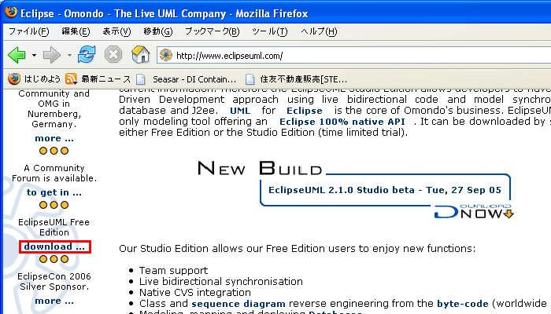
Go down a little bit down the page to the Auto-Installer section. It's possible to download individual required files, but I found that downloading the entire package works the best. We'll be downloading the free edition.
Select the number under the VERSION of the latest release. As of November 23, 2005, this is 2.1.0.2250927.
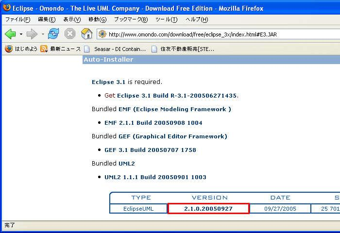
Select the downloaded jar file from File Explorer. It should launch an installation program.
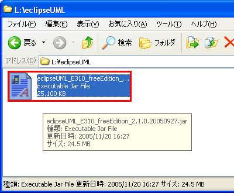
In the "Langauge selection" dialog box, select eng and select the OK button.
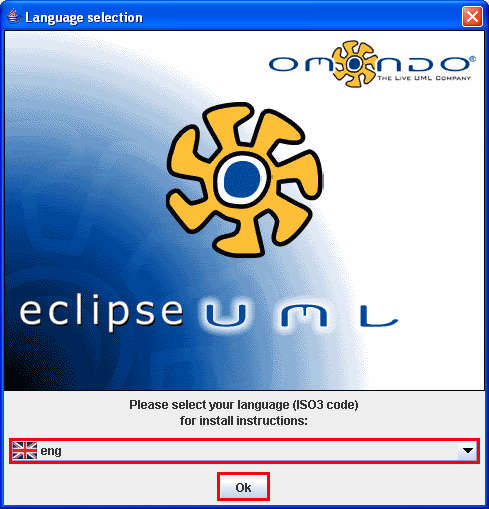
Confirmation screen is shown. Verify that it's the "Free Edition" and select the Next button.
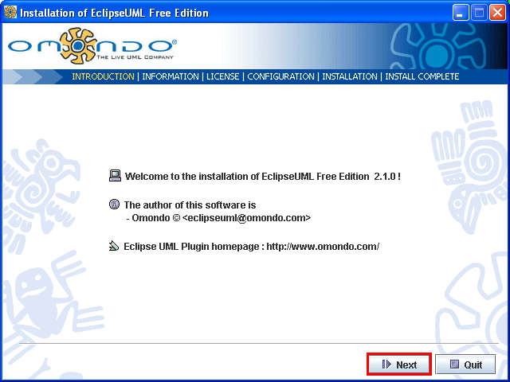
Read the information to know the limitation of the Free Edition and select the Next button.
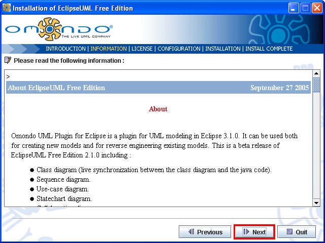
Be sure to read the License carefully and select the I accept the terms of this license agreement. Select the Next button.
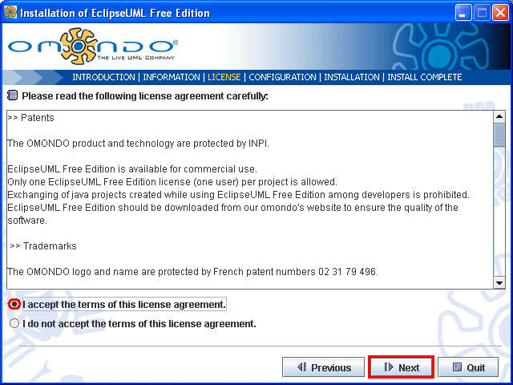
Select the folder where Eclipse is installed. The installer does not automatically detect the folder - it just defaults to \eclipse. If necessary, use the Browse button to find the folder. Select the Next button.
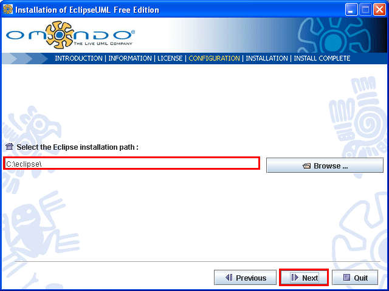
If you already have GEF and EMF installed, make sure you have the "right" version installed. Omondo UML requires the "right" versions of these plugins. If you don't have these installed check GEF 3.1.0, EMF 2.1.1, and UML2.1.1.1. Select the Next button.
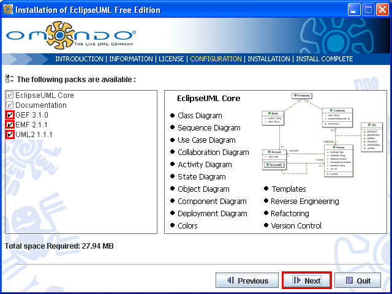
Installation progress screen should appear to show the progress of the software installation. Wait until the installation finishes.
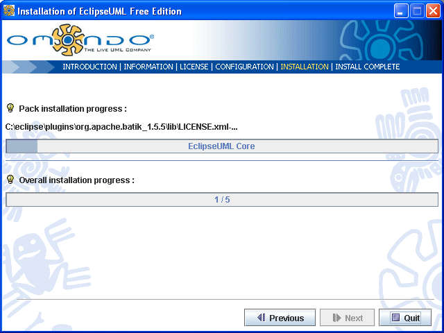
When the installation finished, the Next button again becomes enabled. Select the Next button.
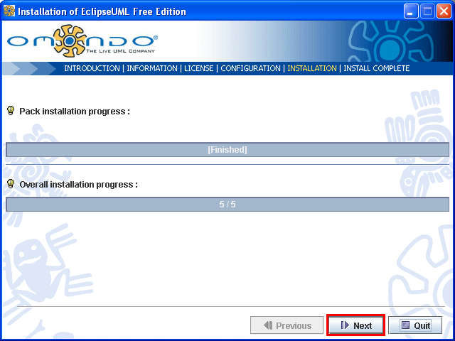
Select the Quit button to complete the installation.
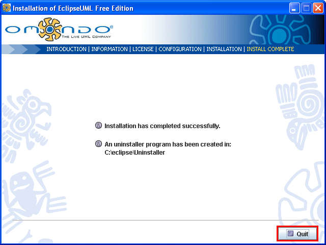
To check if the Omondo UML2.0 plugin was properly installed, open up a Eclipse workspace and select Window - Preferences....
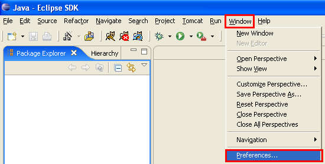
If the Omondo UML2.0 plugin was properly installed, there should be a UML item. Select it to display options available. After looking through the options, select the Cancel button.
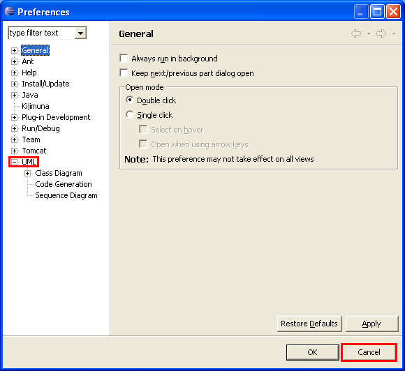